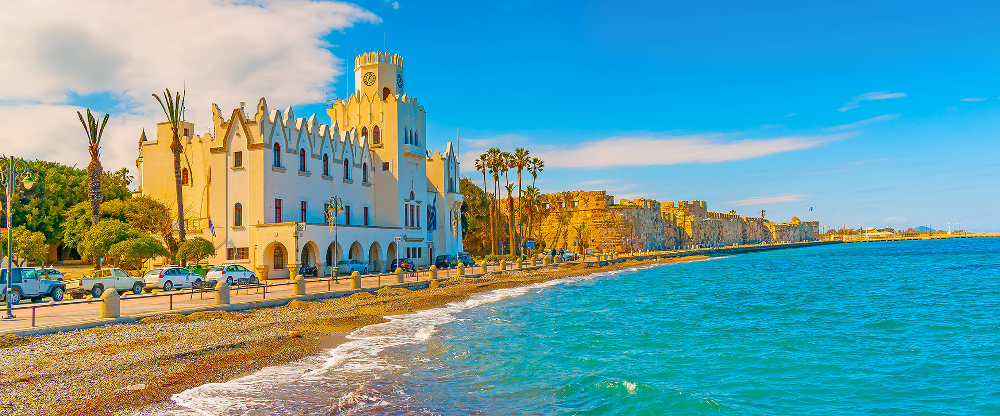

Το νησί
Η Κως είναι ελληνικό νησί του Αιγαίου. Έχει πληθυσμό 33.388 κατοίκους (απογραφή 2011) και είναι το τρίτο μεγαλύτερο νησί της Δωδεκανήσου σε έκταση μετά τη Ρόδο και την Κάρπαθο και το δεύτερο σε πληθυσμό μετά τη Ρόδο. Η επιφάνεια του νησιού είναι 295,3 τ.χλμ. με ακτογραμμή 112 χιλιομέτρων. Πρωτεύουσα του νησιού είναι η Κως, όπου είναι και το κύριο λιμάνι του νησιού. Απέχει από τον Πειραιά 200 ναυτικά μίλια. Είναι πλούσιο σε ιστορικά μνημεία νησί και παρουσιάζει αξιόλογο αρχαιολογικό και τουριστικό ενδιαφέρον. Αποκαλείται επίσης και «νησί του Ιπποκράτη», του πατέρα της ιατρικής, επειδή εκεί γεννήθηκε ο Ιπποκράτης. Η σημερινή Κως είναι ένα σύγχρονο τουριστικό νησί με πολλές δυνατότητες σε θέματα διαμονής, φαγητού, σπορ, εκδρομών, ψυχαγωγίας. Το πλέον αξιοσημείωτο στοιχείο που χαρακτηρίζει το νησί είναι οι ατελείωτοι ποδηλατόδρομοι, γι' αυτό και πολύ συχνά η Κως χαρακτηρίζεται ως το νησί του ποδηλάτου.